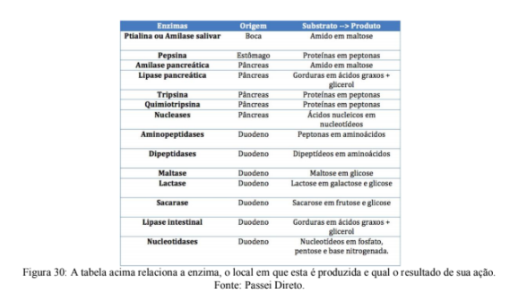
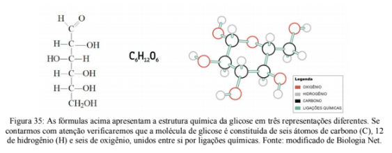
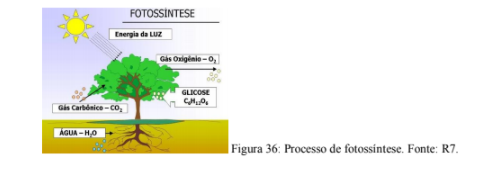
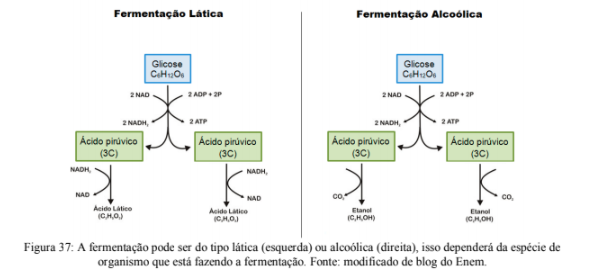

Capítulo 3
A INDÚSTRIA METALÚRGICA UTILIZA A MESMA LÓGICA DAS TEIAS ALIMENTARES
QuestãoA indústria metalúrgica segue uma cadeia de etapas até a criação do produto final. Primeiro os minerais são extraídos da natureza, em seguida eles são purificados, ou seja, separados daquilo que não é útil para a indústria, os minérios purificados são então enviados para os locais onde serão utilizados na construção de objetos.
Você já pensou que os seres vivos se alimentam seguindo uma lógica muito semelhante de extração, refino, distribuição e fabricação?
Contextualizando
A ENERGIA QUE MOVE O CORPODiversas atividades realizadas pelas células ocorrem com gasto de energia, como a síntese de proteínas e ácidos nucléicos, o transporte de determinadas substâncias e os processos de movimentação celular, entre outros.
Para suprir tais necessidades energéticas, organelas denominadas mitocôndrias realizam a chamada respiração celular, através da qual a energia dos alimentos é transferida para a célula.
Para que este processo ocorra a célula precisa receber nutrientes energéticos (na grande maioria das vezes a glicose) e oxigênio. No ser humano, por exemplo, é o sangue que distribui para todas as células do corpo a glicose, obtida através da alimentação, via sistema digestivo, e o oxigênio obtido do ar atmosférico, através dos pulmões.
Alguns seres vivos, como os vegetais, por exemplo, produzem a glicose através do processo de fotossíntese, realizado em organelas denominadas cloroplastos.
Independentemente da forma com que a glicose for obtida, a energia presente nas suas ligações químicas não pode ser utilizada diretamente pelas células. Através da respiração celular do tipo aeróbica (uma série de reações químicas que envolvem a presença de oxigênio) a energia da glicose é transferida e armazenada num tipo especial de ligação química presente nas moléculas de ATP (trifosfato de adenosina), as quais são utilizadas em todos os processos celulares onde haja a necessidade de gasto de energia (figura 29). O ATP é, portanto, a molécula energética da célula.

Na ilustração acima (figura29), I representa a alimentação; II, a digestão; III, a degradação da glicose e IV, a produção de ATP. Todos processos importantes para a obtenção de energia para o nosso corpo.
Isso exemplifica um conceito importante: a energia não é criada pelos seres vivos, mas reaproveitada através da alimentação. A energia do Sol é armazenada em moléculas químicas pelos organismos que fazem fotossíntese, quando um predador se alimenta desse organismo fotossintetizante transfere para si essas moléculas energéticas. Por sua vez quando esse predador também serve de alimento para outro ser vivo essa energia é novamente passada adiante. Dizemos que a energia é conservada ao longo da teia alimentar.
Veja como esses fenômenos acontecem:
(RE)CONSTRUINDO CONHECIMENTOS
DIGESTÃO
Chama-se digestão o processo de diminuição do tamanho de um alimento até que ele possa ultrapassar a membrana plasmática das células. Portanto, não são todos os alimentos que sofrem digestão. A água é um exemplo. Já está em um tamanho reduzido o suficiente para atravessar a membrana das células.
Essa diminuição é feita através da quebra dos alimentos em porções cada vez menores. Existem dos tipos de digestão:
Digestão mecânica: quando a quebra dos alimentos acontece pela aplicação de força. Por exemplo, na mastigação ou na moela de aves.
Digestão química: é realizada pelos sucos digestórios. O suco digestório é uma mistura de substâncias capazes de desmanchar as ligações químicas dos alimentos. Cada tipo de alimento é digerido por uma enzima (tipo de proteína) diferente em um lugar específico do aparelho digestório. Por exemplo, a amilase salivar é uma enzima produzida pelas glândulas salivares da boca, ela é responsável pela digestão do amido. O produto gerado pela ação da amilase salivar é um açúcar chamado maltose (figura 30).
SISTEMA DIGESTÓRIO
Nos animais, existe uma série de órgãos e tecidos responsáveis pela digestão.
O sistema digestivo humano é formado por um longo tubo associado a órgãos anexos (figura 31). Apesar do comprimento, a digestão ocorre na cavidade bucal, no estômago e na primeira porção do intestino delgado conhecida como duodeno. Na outra porção do intestino delgado, região chamada de jejuno-íleo, ocorre a absorção dos nutrientes digeridos. A massa não digerida restante é encaminhada para o intestino grosso onde a água e os sais minerais são absorvidos. É nesse órgão que ocorre a formação das fezes que, quando acumuladas, são eliminadas pelo reto e ânus.

VOCÊ SABIA?
Para que a ação do suco digestório seja eficiente é essencial que ele seja ácido (tenha um pH baixo). Uma vida pouco saudável pode levar ao aumento da acidez do estômago ou ao refluxo, dois problemas relacionados ao sistema digestório que são bastante comuns (figura 32).

Todos os nutrientes, água e sais minerais absorvidos no sistema digestório são distribuídos em todo o corpo por sistema de canais que se ramificam por todo o corpo, chamado de sistema circulatório.
SISTEMA CIRCULATÓRIO
O intestino delgado possui uma intensa rede de vasos sanguíneos e uma camada de musculatura que permite, progressivamente, a passagem dos nutrientes do órgão para o sangue.
O sangue é um tecido constituído por glóbulos vermelhos (hemácias), glóbulos brancos (leucócitos), plaquetas e uma grande quantidade de material intercelular chamado de plasma, que é basicamente água mais todos os nutrientes indispensáveis ao metabolismo.
As hemácias levam o gás oxigênio (O2) para todas as células. Também retorna parte do gás carbônico (CO2) das células até os pulmões (cerca de 25%, o resto é transportado dissolvido na água do plasma). A hemoglobina, presente no interior das hemácias, faz ligações tanto com o O2 quanto com o CO2. Os leucócitos são as células responsáveis pela defesa do organismo. Pelo menos metade dos glóbulos brancos consiste em células que englobam (fagocitose) tudo de quimicamente estranho que detectam pela frente. Outro tipo de leucócito, o linfócito, está separado em classes de células capazes de detectar antígenos (compostos estranhos) e produzir anticorpos (proteínas de defesa) que atuam no sentido de destruir ou inativar a substância invasora. Já as plaquetas são fragmentos de células capazes de fabricar a tromboquinase, enzima que desencadeia o processo de coagulação quando ocorre qualquer rompimento na estrutura dos vasos sanguíneos.
O sangue se movimenta nos vasos sanguíneos porque é impulsionado por um órgão musculoso, o coração. As batidas do coração, que podemos sentir ao tocar o peito, nada mais são do que fortes contrações desse músculo. A cada contração sangue é bombeado para o corpo (figura 33).

VOCÊ JÁ PENSOU SOBRE ISSO TAMBÉM?
Muitas pessoas que passam muitas horas sentadas sofrem com inchaços e dores nas pernas. Já pensou por que isso acontece? O sangue chega aos nossos pés bombeado pelo coração e auxiliado pela gravidade, entretanto o retorno do sangue acontece em sentido contrário à gravidade (figura 34)

Esse movimento para cima do sangue (saindo dos pés e indo para o coração) é auxiliado pela musculatura das pernas (principalmente das panturrilhas). O músculo contrai, aperta as veias e força o sangue a se deslocar. Quando ficamos muito tempo sentados, não há essa "forcinha a mais" e a pressão que o sangue faz nas veias aumenta, podendo levar ao aparecimento de varizes.
Por isso, para quem trabalha muitas horas na mesma posição, é importante lembrar de se movimentar de tempos em tempos e evitar hábitos pouco saudáveis.
Recapitulando: os indivíduos se alimentam, esse alimento é processado através da digestão e os nutrientes absorvidos são espalhados pelo corpo através do sistema circulatório. O que acontece depois?
Uma vez que a glicose dos alimentos é enviada às células pela circulação sanguínea, ocorre a sua degradação e a energia das ligações químicas é transferida para a produção de moléculas de ATP. Você deve lembrar de ler sobre isso no capítulo anterior, mas você talvez ainda não saiba que este processo, chamado de respiração celular, acontece nas células de todos os seres vivos para suprir suas necessidades de energia e pode ou não envolver a participação do oxigênio (O2).
PARA ENTENDER MAIS...
As moléculas são construídas a partir de átomos presos uns aos outros. Eles se mantém unidos por ligações químicas. Para criar uma ligação química é preciso gastar energia e ao quebrar uma ligação química há a liberação de energia. Esse é o princípio por trás da respiração celular. A molécula de glicose é composta por átomos de carbono, hidrogênio e oxigênio ligados entre si (figura 35). O que a respiração celular faz é quebrar algumas dessas ligações e usar a energia liberada para construir uma nova molécula (a de ATP). Já a fotossíntese faz o contrário: usa a energia da luz solar para ligar átomos entre si e montar moléculas de glicose.
Como as plantas obtém glicose para abastecer a respiração? Alguns tipos de bactérias, algas e plantas produzem glicose através da fotossíntese. A luz solar é absorvida pela clorofila que acaba liberando elétrons que são utilizados para quebrar a molécula de água (H2O). O H2 da água junta-se ao CO2 da atmosfera formando moléculas de glicose e liberando O2 (figura 36). Os organismos que fazem fotossíntese são chamados autótrofos, pois produzem seu próprio alimento.
A respiração celular que acontece sem a presença de oxigênio é chamada anaeróbica, já aquela que precisa de oxigênio chama-se aeróbica. Os animais (humanos, por exemplo) são organismos aeróbicos, bactérias e alguns fungos são exemplos de seres anaeróbicos.
Fermentação é um tipo de respiração celular que acontece sem o oxigênio. A glicose é quebrada e a energia das ligações forma duas moléculas de ATP (forma de energia que a célula consegue utilizar). O resultado da fermentação depende do tipo de organismo onde ela ocorre. Por exemplo, se for uma levedura (tipo de fungo), o resultado será a formação de etanol e gás carbônico (figura 37).
A reação descrita acima é muito frequente no processo de produção de etanol, de bebidas alcoólicas e, também, na produção de pães com fermento biológico. Esta é a fermentação alcoólica.
Em bactérias, a reação de produção de ATP não envolve a produção de gás carbônico (figura 37). Neste caso, o produto final serão duas moléculas de ácido láctico, além das duas moléculas de ATP. Este processo é conhecido a centenas de anos. Toda a produção de derivados do leite como queijo, iogurte, coalhada, depende da fermentação láctica realizada pela bactéria Lactobacillos.
VOCÊ SABIA?
Os processos de fermentação fazem parte do nosso cotidiano muito mais do que percebemos!
A levedura da espécie Saccharomyces ceraviseae é a base do fermento biológico, utilizado na fermentação de pães. Quando hidratada, a levedura inicia seu metabolismo utilizando o amido (tipo de açúcar) presente na farinha de trigo. Essa levedura realiza a fermentação alcoólica, produzindo álcool e gás carbônico. As bolhas de gás carbônico fazem com que a massa aumente de volume ( "cresça") e o álcool evapora enquanto o pão cozinha. O mesmo processo com ingredientes diferentes é utilizado na fabricação de cervejas, vinhos, espumantes, etc. (figura 38).
Durante o processo evolutivo, a respiração celular que utiliza oxigênio (aeróbica) foi selecionada, pois é a mais eficiente na produção de energia utilizada pelas células (ATP). A quebra da glicose é aliada à cadeia de transporte de elétrons (um conjunto de proteínas capazes de captar, transportar e transferir os elétrons que foram liberados pela quebra de ligações químicas). Como resultado final, temos a formação de 38 moléculas de ATP para cada glicose utilizada na reação. Como o hidrogênio forma um íon e o seu acúmulo pode aumentar a acidez, sendo isto fatal para a célula, o oxigênio aparece para se ligar ao hidrogênio formando água no final e estabilizando todo o processo. A maior parte da produção de ATP ocorre na organela mitocôndria.
Uma vez obtido o ATP, este é quebrado e a energia contida nas suas ligações é utilizada para o trabalho celular e gerar calor. Por que dizemos que a respiração celular aeróbica foi um grande passo evolutivo? A quantidade de energia gerada por molécula de glicose ingerida é muito maior, logo cada partícula de alimento é melhor aproveitada. Enquanto que na fermentação cada molécula de glicose produz duas moléculas de ATP, na respiração aeróbica cada molécula de glicose produz 38 moléculas de ATP!
AÇÃO E REFLEXÃO
Ao longo de todo esse capítulo discutimos as formas pelas quais os seres vivos transformam o alimento em energia que abastece todas as células do corpo. Ficou claro que nenhum organismo produz energia, apenas a transforma em energia química aproveitável (ATP) aquela energia que capturou do alimento. Pensando nisso, analise a imagem abaixo (figura 39):

A partir da pirâmide percebemos que a cada degrau escalado uma quantidade de energia é perdida. Você consegue propor algumas explicações para que isso aconteça?
A partir da pirâmide percebemos que a cada degrau escalado uma quantidade de energia é perdida. Você consegue propor algumas explicações para que isso aconteça?